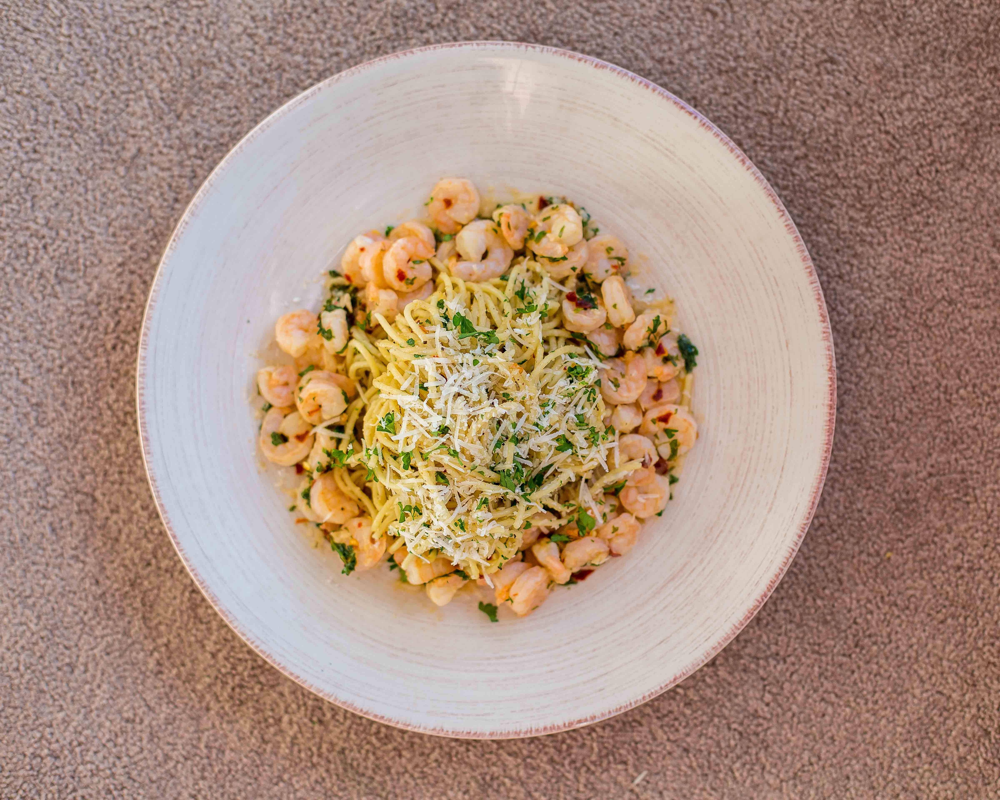

I love noodles. Noodles of all tastes, shapes and kinds. Moving to Canada introduced me to all sorts of amazing noodle and pasta dishes. This one here, however, is hands down one of the best pasta dishes ever invented. Aglio e olio literally means spaghetti with garlic and oil. And that's really it, very simple, very yummy. Pairing it with shrimp cooked in garlic butter helps turn it into a complete meal. Perfect date idea!
- One entire garlic
- Olive oil
- Parsley, dried and fresh
- Chilli flakes
- Salt
- Pepper
- Spaghetti
- Parmigiano Reggiano
- Shrimp
- Butter
Instructions
Peel the garlic and slice it into thin pieces. As thin as you can make them.
Cook the spaghetti according to package instructions. Drain and keep aside.
In a large pan, heat olive oil (1 cup for 250g pasta).
Add the garlic and allow it to infuse with the olive oil.
Keep the heat on low-medium; olive oil burns fairly quickly and we don't want to burn the garlic, only make it golden brown.
Mix in the chilli flakes, salt, pepper and dried parsley.
Add in the cooked noodles.
Add half a bunch of fresh parsley, chopped finely.
In a pan, heat some butter and add two cloves of crushed garlic.
Add the shrimp once the garlic is cooked.
Turn off the heat when the shrimp changes color. Add salt and chilli flakes.
Garnish with fresh parsley.
Serve